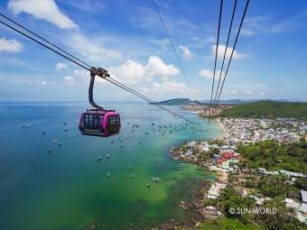
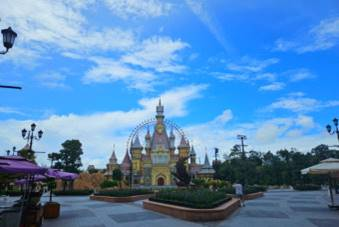
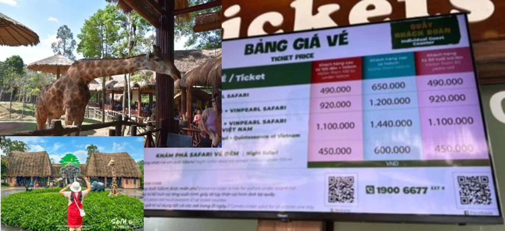

- 혼똔섬(케이블카/워터파크/남부 관광) 핵심 포인트를 여기에 간단히 적어두면 됩니다.
- 이동 시간, 추천 시간대, 준비물(수건/썬크림/아쿠아슈즈) 같은 것만 적어도 좋아요.

- 빈원더스(워터파크+놀이공원) 동선/우선순위(워터파크 → 놀이공원)를 간단히 정리해두면 좋아요.
- 입장권, 라커, 복장(레시가드/갈아입을 옷) 메모 추천!

- 사파리는 햇빛/더위 대비(모자, 양산, 쿨토시)랑 수분 보충이 핵심이에요.
- 아이들 체력 고려해서 휴식 타이밍(점심/간식)을 적어두면 훨씬 편합니다.